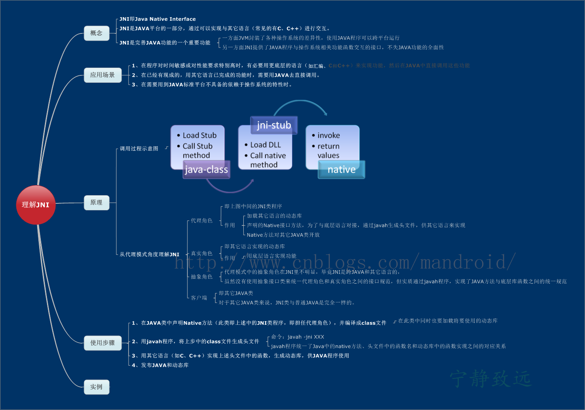

JNI（Java Native Interface）原理与使用
概述
Java本地接口（Java Native Interface(JNI)）允许运行在Java虚拟机(Java Virtual Machine(JVM))上的代码调用本地程序和类库，或者被它们调用，这些程序和类库可以是其他语言编写的，比如：C、C++或汇编语言。
很多基本类库都依赖JNI来为开发者和用户提供服务，比如文件的输入/输出和音频功能。在基本类库中包含的对于性能和平台敏感的API可以允许所有的Java程序以安全和平台无关的方式来使用这些功能。
知识图

一些宏定义
windows宏定义的代码位置：./jdk/src/windows/javavm/export/jni_md.h）；
非windows宏定义代码位置（以MAC为例）：./jdk/src/macosx/javavm/export/jni_md.h）
JNIEXPORT
windows:#define JNIEXPORT __declspec(dllexport)
非windows:#define JNIEXPORT
JNIIMPORT
windows:#define JNIIMPORT __declspec(dllimport)
非windows:#define JNIIMPORT
JNICALL
windows:#define JNICALL __stdcall
非windows:#define JNICALL
实例
使用javah
java代码
编写java代码，并生成C/C++头文件；
程序清单1: HelloJni.java
1 | package org.jackalope.study.jni; |
进入src目录下，编译该JAVA类：
javac HelloJni.java
生成头文件：
javah org.jackalope.study.jni.HelloJni
得到头文件 org_jackalope_study_jni_HelloJni.h，此文件供C、C++程序来引用并实现其中的函数
程序清单2: org_jackalope_study_jni_HelloJni.h
1 | * DO NOT EDIT THIS FILE - it is machine generated */ |
C++代码
编写C++代码，实现函数功能 ———— 打印”HelloJni”。
程序清单3：jni_helloworldImpl.cpp
1 |
|
此C++文件实现了上述头文件中的函数，注意方法函数名要保持一致。
编译生成动态库libHelloJni.jnilib:g++ -shared -I /Library/Java/JavaVirtualMachines/jdk1.8.0_25.jdk/Contents/Home/include/ org_jackalope_study_jni_HelloJni.cpp -o libHelloJni.jnilib
注意：在mac下后缀名应当写为jnilib，这是由
./jdk/src/macosx/classes/java/lang/ClassLoaderHelper.java中的mapAlternativeName方法引起的，代码如下：
1 | // For mac, this replaces the final .dylib suffix with .jnilib |
注意：
mac下会提示找不到jni_md.h，创建一个软链接即可解决：
sudo ln -s darwin/jni_md.h jni_md.h
成功后，便会在当前目录下生成动态链接库libHelloJni.jnilib文件。
有了具体实现的动态库后，就可以运行JAVA调用JNI程序类的native方法了:java -Djava.library.path=../c++/ org.jackalope.study.jni.HelloJni
输出：
From org_jackalope_study_jni_HelloJni.cpp :Hello world !
使用RegisterNatives
优点
- C＋＋中函数命名自由，不必像javah自动生成的函数声明那样，拘泥特定的命名方式；
- 效率高。传统方式下，Java类call本地函数时，通常是依靠VM去动态寻找.so中的本地函数(因此它们才需要特定规则的命名格式)，而使用RegisterNatives将本地函数向VM进行登记，可以让其更有效率的找到函数；
- 运行时动态调整本地函数与Java函数值之间的映射关系，只需要多次call RegisterNatives()方法，并传入不同的映射表参数即可。
为了使用RegisterNatives，我们需要了解JNI_OnLoad和JNI_OnUnload函数。JNI_OnLoad()函数在VM执行System.loadLibrary(xxx)函数时被调用，它有两个重要的作用：
- 指定JNI版本：告诉VM该组件使用那一个JNI版本(若未提供JNI_OnLoad()函数，VM会默认该使用最老的JNI 1.1版)，如果要使用新版本的JNI，例如JNI 1.4版，则必须由JNI_OnLoad()函数返回常量JNI_VERSION_1_4(该常量定义在jni.h中) 来告知VM。
- 初始化设定，当VM执行到System.loadLibrary()函数时，会立即先呼叫JNI_OnLoad()方法，因此在该方法中进行各种资源的初始化操作最为恰当，RegisterNatives也在这里进行。
JNI_OnUnload()当VM释放该组件时被调用，JNI_OnUnload()函数的作用与JNI_OnLoad()对应，因此在该方法中进行善后清理，资源释放的动作最为合适。
Java代码
Java代码和使用哪种方式实现JNI无关，如下所示：1
2
3
4
5
6
7
8
9
10
11
12
13
14
15
16
17
18
19
20
21class MyJavaClass
{
public int iValue;
public void Squa(){iValue = iValue*iValue;}
}
public class RegisterNativesTest
{
static{
System.load("/home/zmh/workspace/RegisterNativesTest/lib/libCallClass.so");
}
public static void main(String[] args)
{
RegisterNativesTest app = new RegisterNativesTest();
MyJavaClass obj = new MyJavaClass();
obj.iValue = 10;
System.out.println("Before callCustomClass: " + obj.iValue);
app.callCustomClass(obj);
System.out.println("After callCustomClass: " + obj.iValue);
}
private native void callCustomClass(MyJavaClass obj);
}
C++代码
C＋＋的代码可以分为两部分：实现callCustomClass方法和注册callCustomClass。
实现callCustomClass方法的代码如下：
1 | void callCustomClass(JNIEnv* env, jobject, jobject obj) |
C＋＋函数内忽略this指针，他所接收的jobject是“Java程序代码传递过来的Java object reference“在原生端的形式，在C＋＋中对jobject的改变在java中也是有效的。如果想要访问Java数据成员和函数，得先使用GetFieldID或GetMethodID分别获取数据成员和函数的识别码，这两个函数的参数依次为1）class object；2）包含元素名称的字符串；3）表示类型的字符串。
注册callCustomClass在JNI_OnLoad中进行，代码如下：
1 | static JNINativeMethod s_methods[] = { |
在C＋＋和Java中创建关联的是JNINativeMethod，它在jni.h中定义：
1 | /* |
name是java中定义的native函数的名字，fnPtr是函数指针，也就是C＋＋中java native函数的实现。signature是java native函数的签名，可以认为是参数和返回值。比如(LMyJavaClass;)V，表示函数的参数是LMyJavaClass，返回值是void。对于基本类型，对应关系如下：
1 | 字符 Java类型 C/C++类型 |
数组则以”[“开始，用两个字符表示，比如int数组表示为［I，以此类推。
如果参数是Java类，则以”L”开头，以”;”结尾，中间是用”/“隔开包及类名，例如Ljava/lang/String;，而其对应的C＋＋函数的参数为jobject，一个例外是String类，它对应C＋＋类型jstring。